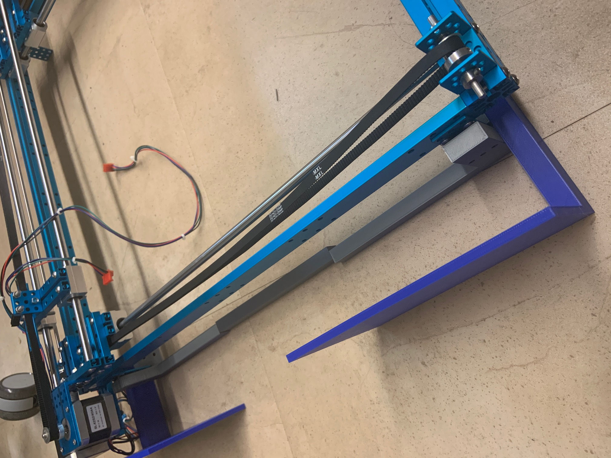
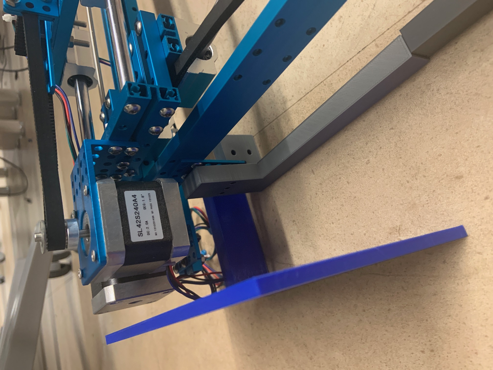
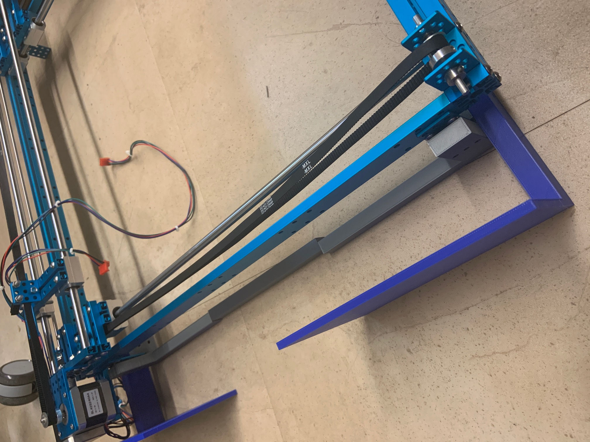
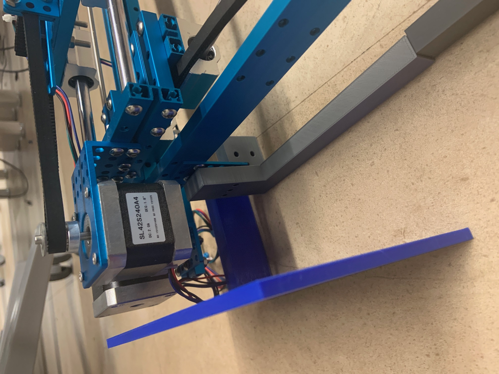

Alex Gokan
Progress Report
Week 2
Due Date: 8/30/2019
Total hours: 8 hours
Description of design efforts: Got 2-axis machine from old team (chessboard team from last year) to use as the base of our piece mover. Hooked up motors to DRV8825 stepper motor controllers via breadboard, and were able to control movement using PWM waveforms from the oscilloscope wave generator.
Purchased an old computer monitor from the surplus store to use as the display for the center segment. Tore it down as much as we could to reduce its size

{kind=link}
{kind=link}

Week 3
Due Date: 9/6/2019
Total hours: 5 hours
Description of design efforts: Started building 3D model of enclosure, preliminary measurements indicate that monitor may be too big for frame, will conduct further measurements to confirm. Investigating 3D printing materials for frame

Week 4
Due Date: 9/13/2019
Total hours: 8 hours
Description of design efforts: attempted to wire both DRV8825 motor controllers onto one breadboard/regulator, but somehow managed to damage the old chip. More DRV8825 chips are arriving in the mail on Saturday.
Our initial plan for how the monitor would fit into the frame turned out to be unworkable. We brainstormed many options ranging from a differently shaped monitor to a completely new movement mechanism, but settled on a simple method of raising the frame/plotter above the screen, and sacrificing about 5cm of screen space on each side
Further progress has been made on the enclosure model, and the first draft of the base has been sent out for 3D printing. It should be done by Wednesday 9/18
{kind=link}
{kind=link}
{kind=link}
{kind=link}
Week 5
Due Date: 9/20
Total hours: 5 hours
Description of design efforts: 3D printed frame parts arrived. Measurements on the leg distances were off by ~2mm and will have to be adjusted manually. After installing the backing, we realized that there is not enough clearance for the plotter motors so a second revision of the model will be needed.
Finalized the placement of the display, which will be incorporated into the next revision of the model.
Drafted the PCB footprints which will also be included in the next model revision
 



{kind=link}
{kind=link}
{kind=link}
{kind=link}
{kind=link}
Week 6
Due Date: 9/27/2019
Total hours: 5 hours
Description of design efforts: Revised 3D model with PCB footprint and display supports. This added ~5cm to the height of the overall design. Added mounting points to all brackets so that they wont move around on the base. Sent all parts off for printing. Found/purchased wood and bolts for mounting.
Mounting of main PCB still has to be determined, but since we dont have a finalized PCB yet the best I could do was to build in a sufficient amount of room in the frame
All parts will be mounted and assembled using 4mm bolts for convenience
There will be a 3.5 cm clearance from the top of the monitor to the actual acrylic gameboard on top, to allow for the magnetic head to move around
{kind=link}
{kind=link}
{kind=link}
Week 7
Due Date: 10/4/2019
Total hours: 5 hours
Description of design efforts: 3D printed parts arrived. All signs point to them being a good fit, with only a few minor issues. The large side pieces were not printed to save material, and will probably be made of wood or acrylic. I forgot to account for the thickness of the screw head the holds the CNC machine together. The options are to cut the part down, reprint with adjusted measurements, or move the entire system up by one row of mounting holes. The the third option is easiest, but will add ~8mm of extra headroom over the monitor which we may want to avoid
Began putting together code to interface with IMU sensor. Some code was taken from STM's github page. I have not compiled or run it yet, as the instructions provided are still not totally clear to me. I am hoping one of my team members who understands embedded design a bit better than me can understand whats going on
{kind=link}
{kind=link}
{kind=link}
{kind=link}
{kind=link}